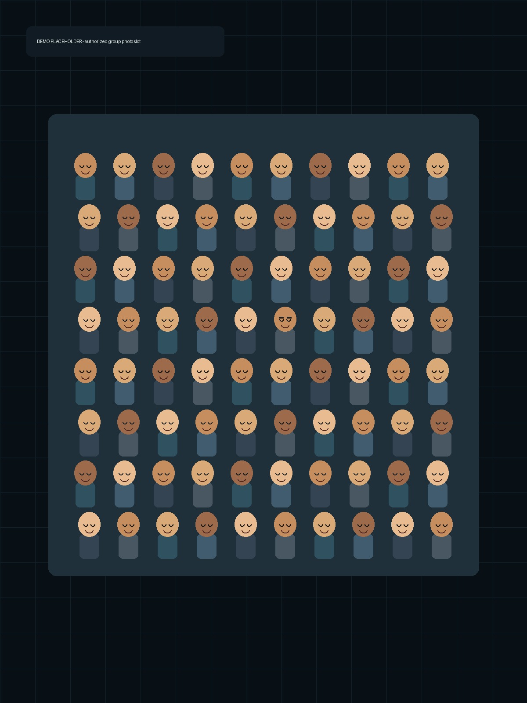
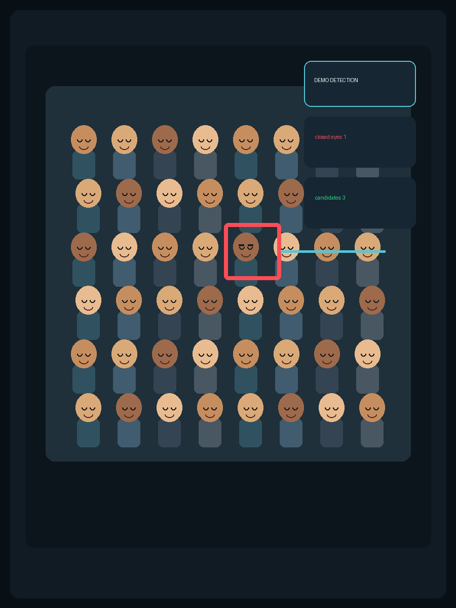

01 / 检测
识别问题表情
分析闭眼、转头、抬头、低头和倾斜，快速定位需要处理的人脸。
从导入、检测、匹配到分层交付，每一步都围绕真实的大合影连拍场景设计。
分析闭眼、转头、抬头、低头和倾斜，快速定位需要处理的人脸。
从同场景连拍里找到同一个人的候选表情，避免凭记忆逐张翻找。
高置信度问题可一键修复，人工选择与实时预览始终保留在手中。
支持 PSD/PSB 分层导出，方便后续在 Photoshop 中继续完成商业精修。
保留真实人物和真实拍摄关系，让修复结果自然、可控、可复核。


适合固定机位、同一场景、多张连拍的工作方式。
支持 RAW、JPG、PNG、TIFF，并建立本地缓存。
识别人脸、分析姿态，再匹配同一人的候选表情。
查看候选、人工评分，实时预览替换结果。
导出 PSD/PSB、JSON/CSV、图片、PDF 等格式。
用在你熟悉的场景里：真实拍摄、真实客户、真实的交付压力。
多人同场景连拍，减少闭眼、歪头和表情问题。
活动结束后更快完成一整组团体合影交付。
面对多人合影，保留更自然、更可靠的表情。
把重复的找脸、对比和导出流程集中处理。
群像 AI 面向 Windows 离线工作流设计。照片无需上传云端，适合对客户原片和现场素材有隐私要求的摄影工作室。
下载 Windows 版，按你的真实连拍流程开始体验。